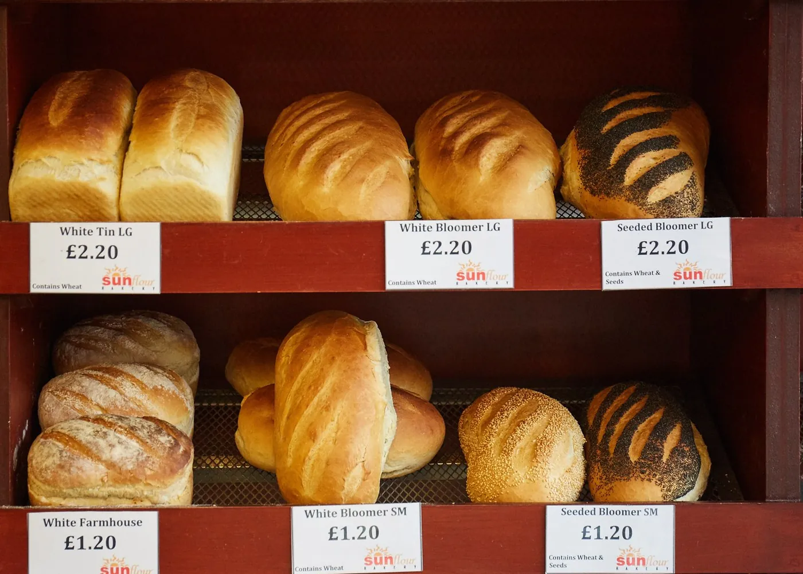
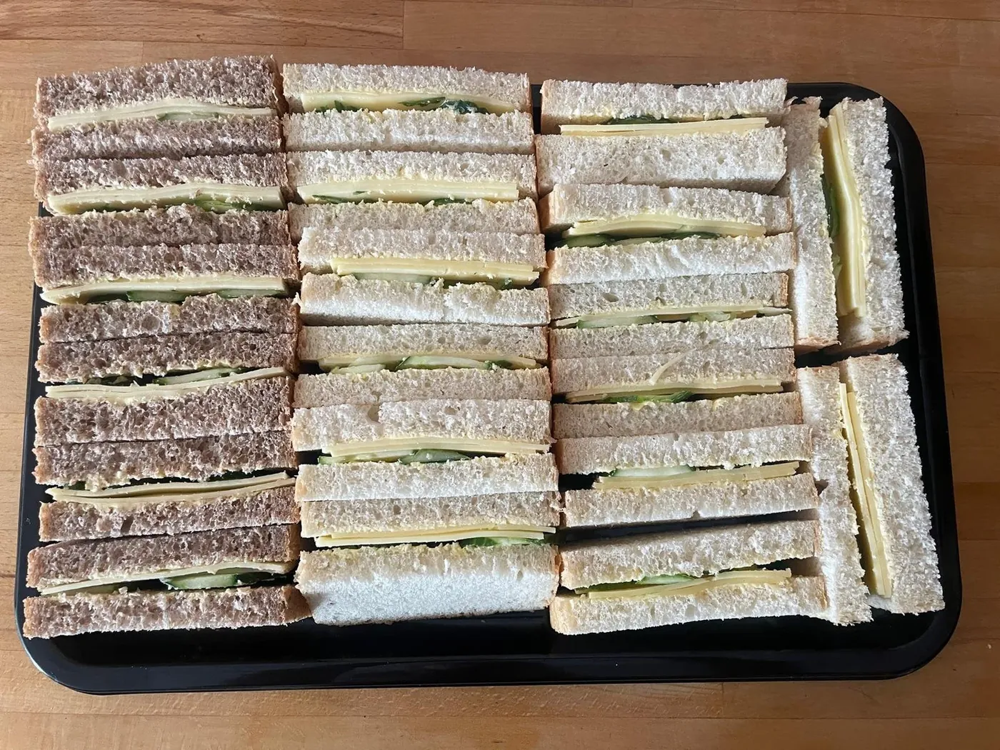
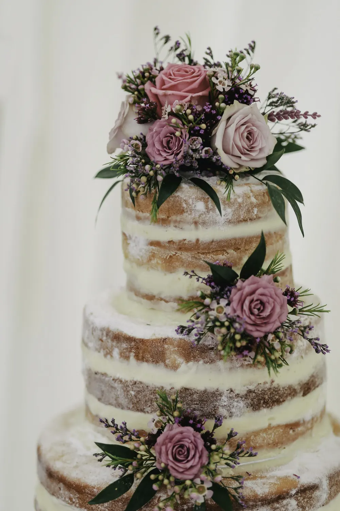
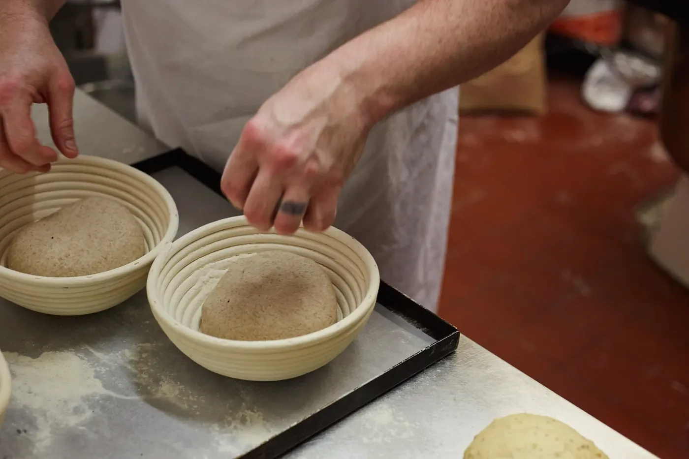
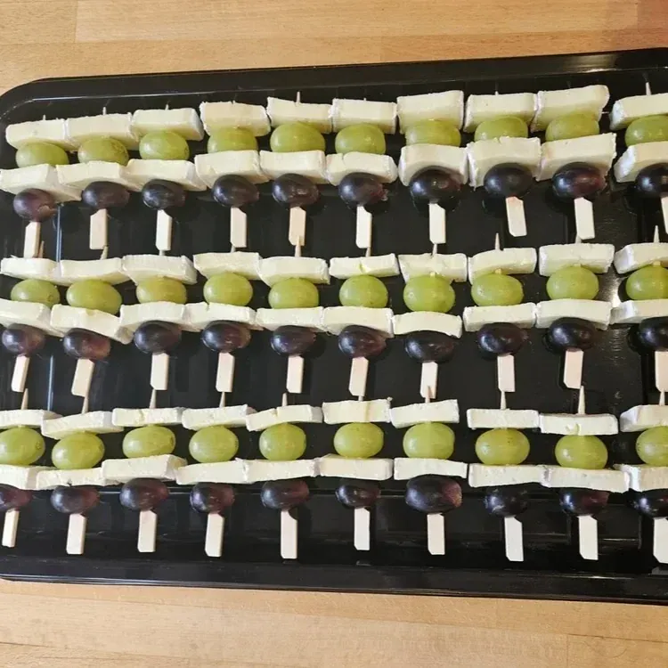

Sourdough
Long-fermented with white, wholemeal and rye flours and our rye sourdough starter, for a rustic loaf with a lovely sour flavour.
Order onlineFrom freshly baked artisan bread to homemade favourites and beautifully prepared catering, discover the taste of Sunflour Bakery on Caledonian Road.

 Baked on siteevery single day12 artisan breadsfrom sourdough to rye
Baked on siteevery single day12 artisan breadsfrom sourdough to rye
Artisan bread, pastries, homemade soups and lunches, plus coffee to take away.
Explore the bakery
Corporate and private catering for up to 200 guests: breakfasts, buffets, hot food and canapés.
Request a quote
Bespoke birthday, wedding and celebration cakes, made to order for your special day.
Order a cakeFrom rustic sourdough and traditional Irish soda bread to our speciality loaves, there’s something for every table.
Long-fermented with white, wholemeal and rye flours and our rye sourdough starter, for a rustic loaf with a lovely sour flavour.
Order online
Ireland’s most famous bread, made with white, wholemeal and rye flours, buttermilk, baking soda and salt.
Order online



Since 2013, Sunflour Bakery has been bringing freshly made bread, homemade food and a warm personal touch to Caledonian Road. Every day, we put care and passion into the food we make and the people we serve.
Planning a family celebration, wedding or corporate event? Let Sunflour take care of the food. We create catering tailored to your occasion, guests and budget, for groups of up to 200.



Bespoke birthday, wedding and celebration cakes, baked to order by Gabriela and the team.
Celebrate the festive season with freshly baked treats, Christmas favourites and handcrafted delights from Sunflour Bakery.
Real customer reviews, genuine experiences and a little taste of home.
“The service was incredible and the staff was extremely kind.”
“The most friendly and easy-to-work-with people you can imagine!”
“The pastries and the tarts are amazing… the best sausage roll we ever had in London!”
“A real labour of love.”
Testimonials from our customers · Read more reviews on Google ↗
Freshly baked favourites are waiting for you, a short walk from Caledonian Road station and King’s Cross.
Visit our bakery, browse our menu or get in touch to plan something delicious.